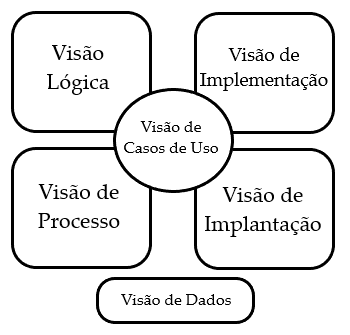

Documento de Arquitetura de Software
1. Introdução
1.1. Finalidade
A intenção desse documento de arquitetura é mostrar e documentar informações e decisões relevantes do projeto Tá na Mesa do ponto de vista arquitetural. Facilitando a visualização e entendimento da estrutura do projeto.
1.2. Escopo
Este Documento de Arquitetura de Software se aplica ao Projeto Tá Na Mesa. Desenvolvido na disciplina de Arquitetura e Desenho de Software da Universidade de Brasília.
Uma prática comum em projetos desenvolvidos com o auxílio do _RUP (Rational Unified Procces)_é utilizar o DAS (Documento de Arquitetura de Sofwtare), divididido em módulos que são chamado de modelo de visualização 4+1.

Por conseguinte do que se mostra na imagem acima, as visões presentes neste modelo são:
- Visão de Casos de Uso.
- Visão Lógica.
- Visão de Implementação.
- Visão de Processo.
- Visão de Implantação.
- Visão de Dados, que é opcional.
1.3. Definições, Acrônimos e Abreviações
- UnB - Universidade de Brasília
- Tá na Mesa - Sistema web e mobile focado em restaurantes e lanchonetes com o objetivo de melhorar a qualidade do atendimento e experiência no local
- Backend - Parte do sistema responsável por prover e organizar recursos para a interfáce do sistema
- Frontend - Parte do sistema responsável por ser a interfáce entre o sistema e o usuário
- DAS - Documento de Arquitetura de Software
2. Representação da Arquitetura
2.1. Tecnologias
2.1.1. Frontend
ReactJS
ReactJS é uma biblioteca de código aberto com foco em criar interfaces de usuário em páginas Web. Este framework é mantido pelo Facebook, Instagram e outras empresas além de um comunidade de desenvolvedores.
PWA
PWA (Progressive Web App) é uma aplicação híbrida entre web e mobile onde é possível fazer o download de um site para que ele vire uma aplicação no celular.
2.1.2. Backend
Node.js
Node.js é um software de código aberto, multiplataforma, baseado no interpretador V8 do Google e que permite execução de códigos JavScript fora do navegador. Este software foi criado utilizando a linguagem JavaScript.
2.1.3. Banco de Dados
PostgreSQL
PostgreSQL é um SGBD(Sistema Gerenciador de Banco de Dados) relacional, desenvolvido como um projeto de código aberto, que já conta com mais de 30 anos de desenvolvimento ativo. É um sistema muito conhecido por sua forte reputação de confiabilidade e recursos de desempenho.
3. Requisitos e Restrições Arquiteturais
3.1. Requisitos
| Requisitos | |
|---|---|
| Escalabilidade | A aplicação deve ser escalável |
| Deploy | A aplicação deve possuir deploy automatizado |
| Segurança | A aplicação deve possuir mecanismos de proteção dos dados mais sensíveis dos usuários |
3.2. Restrições
| Restrições | |
|---|---|
| Plataforma | A aplicação terá suporte para browsers no computador, tablet e celular |
| Público | A aplicação será desenvolvida voltada ao público brasileiro e que possui empreendimentos no ramo alimentício |
| Linguagem | A aplicação será desenvolvida em português do Brasil |
| Prazo | O escopo proposto deve ser terminado até o final da disciplina |
| Equipe | A equipe possui apenas 10 integrantes |
| Conectividade | É necessária a conexão com internet para utilização da aplicação |
4. Visão de Casos de Uso
A Visão de Casos de Uso busca demonstrar um modelo de alto nível em relação as funcionalidades do sistema. Neste caso será feito através dos Diagramas de Caso de Uso.
4.1. UC01 - Realizar pedido

| UC01 | Informações |
|---|---|
| Descrição | O cliente realiza um pedido |
| Ator | Cliente |
| Pré-condições | Acesso a Internet e estar numa mesa |
| Ação | O usuário vê produtos e os adiciona na conta |
| Fluxo Principal | FP01: Fluxo de adicionar produtos pela primeira vez 1. O ator entra no aplicativo 2. O sistema exibe uma lista de produtos 3. O ator procura pelo produto que deseja 4. O ator clica sobre a imagem desse produto 5. O ator visualiza detalhes e o adiciona ou volta para o passo 3 6. O ator confirma o pedido. |
| Fluxo Alternativo | FA01: Fluxo quando já há produtos 1. O ator entra no aplicativo 2. O ator clica no botão flutuante de pedidos 3. O sistema exibe a lista de produtos selecionados 4. O ator adiciona/retira os produtos existentes 5. O ator confirma o pedido. |
| Pós-condições | O ator irá esperar pelo pedido ficar pronto |
| Rastreabilidade | Requisitos Funcionais 1, 2, 13, 14, 22, 26, 27, 30, 41, 44, 56-61, 63 do documento de Priorização |
4.2. UC02 - Chamar o garçom

| UC01 | Informações |
|---|---|
| Descrição | O cliente chama o garçom |
| Ator | Cliente, Garçom |
| Pré-condições | Acesso a Internet e estar numa mesa |
| Ação | O cliente envia um chamado para o garçom |
| Fluxo Principal | FP01: Fluxo de enviar mensagem para um usuário que o ator já interagiu 1. O cliente entra no aplicativo 2. O cliente clica no botão de chamar o garçom 3. O garçom recebe o chamado no seu celular 4. O garçom comparece a mesa chamada. |
| Fluxo Alternativo | |
| Pós-condições | O cliente foi atendido pelo garçom |
| Rastreabilidade | Requisitos Funcionais 12, 21, 23 do documento de Priorização |
4.3. UC03 - Ver pedidos

| UC01 | Informações |
|---|---|
| Descrição | O ator vê os pedidos de uma mesa |
| Ator | Gerente, Cozinha, Garçom, Cliente |
| Pré-condições | Acesso a Internet e possuir o aplicativo |
| Ação | O ator visualiza os produtos adicionados pela mesa |
| Fluxo Principal | FP01: Fluxo da Cozinha, Garçom e Cliente 1. O ator entra no aplicativo 2. O ator seleciona a opção de ver pedidos 3. O sistema exibe a lista de produtos pedidos |
| Fluxo Alternativo | FA01: Fluxo do Gerente 1. O gerente entra no aplicativo 2. O gerente seleciona a opção de ver pedidos 3. O sistema exibe a lista de produtos pedidos 4. O gerente mantém, edita ou cancela um pedido conforme a necessidade. |
| Pós-condições | O ator visualizou os pedidos realizados |
| Rastreabilidade | Requisitos Funcionais 3-7, 9, 13, 15-19, 24, 28-29, 33-36, 42, 45-50, 54 do documento de Priorização |
4.4. UC04 - Ver mesas

| UC01 | Informações |
|---|---|
| Descrição | O ator vê ou gerencia uma mesa |
| Ator | Gerente, Garçom |
| Pré-condições | Acesso a Internet e possuir o aplicativo |
| Ação | O ator visualiza uma mesa ou a gerencia |
| Fluxo Principal | FP01: Fluxo do Garçom 1. O garçom entra no aplicativo 2. O garçom seleciona a opção de ver mesas 3. O sistema exibe a lista de mesas |
| Fluxo Alternativo | FA01: Fluxo do Gerente 1. O gerente entra no aplicativo 2. O gerente seleciona a opção de ver mesas 3. O sistema exibe a lista de mesas 4. O gerente adiciona, edita ou apaga uma mesa conforme a necessidade. |
| Pós-condições | O ator visualizou ou gerenciou as mesas |
| Rastreabilidade | Requisitos Funcionais 10, 31-32, 51-53 do documento de Priorização |
4.5. UC05 - Gerenciar garçons

| UC01 | Informações |
|---|---|
| Descrição | O gerente vê ou gerencia um garçom |
| Ator | Gerente |
| Pré-condições | Acesso a Internet e possuir o aplicativo |
| Ação | O gerente visualiza um garçom ou o gerencia |
| Fluxo Principal | FP01: Fluxo para visualizar garçons 1. O gerente entra no aplicativo 2. O gerente seleciona a opção de ver garçom 3. O sistema exibe a lista de garçons |
| Fluxo Alternativo | FA01: Fluxo para gerenciar garçons 1. O gerente entra no aplicativo 2. O gerente seleciona a opção de ver garçom 3. O sistema exibe a lista de garçons 4. O gerente adiciona, edita ou apaga um garçom conforme a necessidade. |
| Pós-condições | O gerente gerenciou ou visualizou um garçom |
| Rastreabilidade | Requisitos Funcionais 20, 39-40 do documento de Priorização |
4.6. UC06 - Gerenciar cardápio

| UC01 | Informações |
|---|---|
| Descrição | O ator vê ou gerencia um cardápio |
| Ator | Cliente, Gerente |
| Pré-condições | Acesso a Internet e possuir o aplicativo |
| Ação | O ator visualiza um cardápio ou o gerencia |
| Fluxo Principal | FP01: Fluxo para visualizar cardápio 1. O ator entra no aplicativo 2. O ator seleciona a opção de ver cardápio 3. O sistema exibe a lista de produtos no cardápio. |
| Fluxo Alternativo | FA01: Fluxo para gerenciar cardápio 1. O gerente entra no aplicativo 2. O gerente seleciona a opção de ver cardápio 3. O sistema exibe a lista de produtos no cardápio 4. O gerente adiciona, edita ou apaga um produto do cardápio conforme a necessidade. |
| Pós-condições | O ator gerenciou ou visualizou o cardápio |
| Rastreabilidade | Requisitos Funcionais 1, 11, 37-38, 55, 57, 62-63 do documento de Priorização |
5. Visão Lógica
A Visão Lógica busca demonstrar a organização conceitual da aplicação em termos de camadas, pacotes, classes e interfaces.
5.1. Diagrama de Contexto
Este diagrama é focado em demonstrar o escopo da aplicação através do fluxo de dados de maior nível, ou seja, representando todo o sistema. Este diagrama foi desenvolvido no início do projeto e de acordo com as necessidades foi sendo alterado e pode ser vista em Descrição Arquitetural. Abaixo segue a versão mais atualizada:

5.2. Diagramas de Pacotes

| DP01 | Diagrama de Pacotes da Aplicação |
|---|---|
| Versão | Atual: 1.0 (21/08) Anterior: - |
| Descrição | Diagrama UML de pacotes da aplicação |
| Autor(es) | Daniel Primo e Tiago Samuel |
6. Visão de Implementação
A Visão de Implementação mostra como, de fato, a aplicação será desenvolvida.
6.1. Diagrama de Pacotes de Classes

| DP02 | Diagrama de Pacotes de Classes |
|---|---|
| Versão | Atual: 1.0 (21/08) Anterior: - |
| Descrição | Diagrama UML de pacotes de classes |
| Autor(es) | Daniel Primo e Tiago Samuel |
6.2. Diagrama de classes
6.2.1. Descrição
Diagramas de classes mapeiam de forma clara a estrutura de um determinado sistema ao modelar suas classes, seus atributos, operações e relações entre objetos. A forma de classe em si consiste em um retângulo com três linhas. A linha superior contém o nome da classe, a linha do meio, os atributos da classe e a linha inferior expressa os métodos ou operações que a classe pode utilizar. Classes e subclasses são agrupadas juntas para mostrar a relação estática entre cada objeto.
Para o diagrama de classes do nosso projeto, escolhemos realizar um único diagrama geral. Foi escolhido dessa maneira, pois temos apenas um banco de dados, o que nos fez escolher apenas um diagrama de classes para representar a aplicação como um todo. Nos baseamos, além do material disponibilizado na disciplina, na Modelagem de Dados do Tá Na Mesa e em um projeto antigo da disciplina chamado QR Comer, que possui um sistema semelhante ao nosso, o que nos deu uma visão de métodos e atributos que não foram pensados em um primeiro momento pela equipe.

| DC01 | Diagrama de Classes |
|---|---|
| Versão | Atual: 1.0 (20/08) Anterior: - |
| Descrição | Diagrama UML de classes da aplicação |
| Autor | Abner Filipe e Tiago Samuel |
7. Visão de Processo
7.1. Realizar Pedido

| DS01 | Diagrama de Sequência - Realizar Pedido |
|---|---|
| Descrição | Fluxo de realização do pedido, com os atores Cliente, Garçom e Cozinha |
| Autor | Daniel Primo e Herick Portugues |
8. Visão de Dados
8.1. Diagrama Entidade-Relacionamento (DE-R)

8.2. Diagrama Lógico de Dados (DLD)

8.3. Dicionário de Dados
Entidade: EMPLOYEE
| Atributo | Propriedade do aributo | Tipo de Dado | Descrição |
|---|---|---|---|
| cpf | Chave Primária | number | Identificador de cada funcionário |
| name | Obrigatório | string | Nome completo de cada funcionário |
| occupation | Obrigatório | enum('gerente','cozinha', 'garcom') | Representa a atuação do funcionário dentro do restaurante |
| password | Obrigatório | string | Senha para autenticação do funcionário |
Entidade: CLIENT
| Atributo | Propriedade do aributo | Tipo de Dado | Descrição |
|---|---|---|---|
| idClient | Chave Primária | number | Chave identificadora do cliente, é gerada automaticamente pelo banco |
| name | Chave Primária | string | Nome fornecido pelo cliente para constar na comanda individual |
Entidade: ORDER
| Atributo | Propriedade do aributo | Tipo de Dado | Descrição |
|---|---|---|---|
| idOrder | Chave Primária | number | Chave identificadora de cada comanda individual realizado por uma mesa |
| status | Obrigatório | enum('na fila','na cozinha','preparado','na mesa') | Situação do comanda após ser efetuado pelo cliente |
| idTable | Chave Estrangeira | number | Chave identificadora de cada mesa disponível para uso dos clientes |
| idClient | Chave Estrangeira | number | Chave identificadora do cliente que realizou o pedido |
| nameClient | Chave Estrangeira | string | Chave identificadora com o nome do cliente que realizou o pedido |
| date | Obrigatório | Date | Data em que o pedido foi feito |
Entidade: ITEM
| Atributo | Propriedade do aributo | Tipo de Dado | Descrição |
|---|---|---|---|
| idItem | Chave Primária | number | Chave identificadora de cada item disponível para comandas no cardápio |
| name | Opcional | string | Nome do item fornecido pelo gerente no momento do cadastro |
| price | Opcional | number | Preço individual do item sem incluir qualquer discount |
| discount | Opcional | number | Desconto que pode ser aplicado ao item em caso de promoção (sempre em porcentagem) |
| image | Opcional | string | Imagem do item |
| description | Opcional | string | Descrição do item contendo todos os ingredientes presentes em sua composição |
| notes | Opcional | string | Observação manual que pode ser feita pelos clientes caso queiram retirar algum ingrediente do item |
| category | Obrigatório | enum('hamburgueres','petiscos', 'molhos adicionais', 'saladas','bebidas','sobremesas') |
Grupo no qual os itens disponíveis são divididos |
Entidade: TABLE
| Atributo | Propriedade do aributo | Tipo de Dado | Descrição |
|---|---|---|---|
| idTable | Chave Primária | number | Chave identificadora de cada mesa disponível para uso dos clientes |
| cpfWaiter | Chave Estrangeira | string | Chave identificadora do garçom responsável pelo atendimento da mesa |
| needHelp | Obrigatório | boolean | Ferramenta para cliente chamar garçom |
| password | Obrigatório | string | Senha para autenticação da mesa |
9. Referências
PANT, Prabhu. A complete guide to PostgreSQL. [S. l.], 2018. Disponível aqui. Acesso em: 13 Outubro 2021.
WAYNER, Peter. The top 5 software architecture patterns: how to make the right choice. [S. l.]. Disponível aqui. Acesso em: 12 Outubro 2021.
Documento de arquitetura de software. Disponível aqui Acesso em: 11 de Outubro 2021.
Documento de arquitetura de software. Disponível aqui Acesso em: 10 de Outubro 2021.
QRComer. Disponível aqui. Acesso em: 09 de Outubro 2021.
Histórico de Revisões
| Data | Versão | Descrição | Autor(es) |
|---|---|---|---|
| 13/10/2021 | 0.1 | Adiciona estrutura do documento | Tiago Rodrigues |
| 14/10/2021 | 0.2 | Cria o documento | Lucas Boaventura |
| 15/10/2021 | 0.3 | Adiciona imagens | Daniel Primo |
| 15/10/2021 | 0.4 | Atualiza diagrama de contexto | Emily Dias, Hérick Portugues |
| 15/10/2021 | 0.5 | Atualiza tópico de visão de dados | Abner Filipe, Sergio Cipriano, Hérick Portugues |
| 15/10/2021 | 1.0 | Atualiza dicionário de dados | Eduarda Servidio, Brenda Santos, ítalo Alves |
| 15/10/2021 | 2.0 | Revisa o documento e altera algumas formatações | Lucas Boaventura |
| 15/10/2021 | 2.1 | Corrige numeração do documento | Herick Portugues |